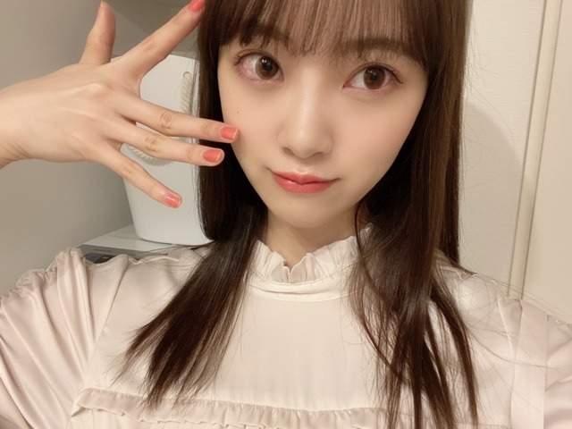

2020/0313Friアップルパイ
暖かくなり
花粉も多くなってきましたが
花粉症の皆さん大丈夫でしょうか？
私は結構きてます...うう...


アレルギーをたくさん持っているので
体質改善の為に漢方を飲み始めました!
苦くて粉薬飲めなかったけど、頑張ってます!
忘れないようにしないとっ
この間
レコメン！の皆さんに遅めのバレンタインで
ポテサラと煮込みハンバーグと玄米おにぎり
を作ったのですが
みなさんモリモリ食べてくださって嬉しかったです♡
春になるとお弁当作りたくなります...!
そして
3月いっぱいで
レコメン！を卒業することになりました☺︎
急なお知らせですみません
乃木ののから始まって
レコメン！では3年間も
のりさんとWパーソナリティをやらせていただき
ラジオに苦手意識があった私がラジオ大好きになったのは今までのラジオのおかけです!
毎週たくさん笑ったなぁ~
いっぱい素を出して楽しめました!
スタッフさんリスナーにみなさんには感謝の気持ちでいっぱいです☺︎
ちょっぴり寂しいけど残りも楽しみます
そして来週の水曜日はだいすきな絢音とみり愛も来てくれて、プリン会初集結になります(^-^)
楽しみ ぜひ聴いてください!
4月からは4期生の田村ちゃんに代わります✨
新しい風! まゆちゃんらしく楽しんでね!


20日19:00〜
テレビ朝日系列
アメトーク3時間spに絵心ない芸人で出演します!
芸人です!
うそです!
昨年に引き続きでした!
みなさん優しくて面白くて毎回楽しませていただいています~
ぜひぜひ
2020/03/13 14:36
コメント(322)
未央奈ブロありがとう〜
鼻がムズムズするよぉ〜
レコメン卒業おめでとう
鼻がムズムズするよぉ〜
レコメン卒業おめでとう
未央奈ちゃんブログ更新ありがとう！
レコメンお疲れ様！
またコメントします！
レコメンお疲れ様！
またコメントします！
花粉症がきてても堀さんの綺麗さはくすまないね〜(* ॑꒳ ॑* )
更新ありがとう
僕も花粉症です。
くしゃみとか鼻水がつらいですよ。
未央奈ちゃんが作ったポテサラ、煮込みハンバーグ、玄米おにぎりめっちゃ食べたい
ラジオ３月までなんですね。それまでには一回は聴けるといいな～
写真かわいい～
アップルパイなんですが子供のころは苦手だったのですが最近アップルパイの美味しさがわかってちょっと大人になった気分です。
僕も花粉症です。
くしゃみとか鼻水がつらいですよ。
未央奈ちゃんが作ったポテサラ、煮込みハンバーグ、玄米おにぎりめっちゃ食べたい
ラジオ３月までなんですね。それまでには一回は聴けるといいな～
写真かわいい～
アップルパイなんですが子供のころは苦手だったのですが最近アップルパイの美味しさがわかってちょっと大人になった気分です。
堀未央奈❤こんばんは❗俺は、花粉症になった事ないから大丈夫だよ(^-^)v未央奈は、大丈夫？苦手な薬飲んで早く治るといいね。バレンタインに料理したんだね(^o^)v俺も食べたかったな(T_T)レコメン卒業するんだね(T_T)今までお疲れ様❗これからも頑張ってね(*^_^*)応援しているからね(*^O^*)大好きだよ❤
未央奈レコメンお疲れ様
最後まで楽しんでね
最後まで楽しんでね
あらためて、レコメン！お疲れ様でした！
あと2回、しっかりと聴きます！
そして漢方、まいちゅんも漢方のおかげで花粉症がだいぶ和らいだと、先日のANNで話してました。
効果があることを、祈っています♪☆
あと2回、しっかりと聴きます！
そして漢方、まいちゅんも漢方のおかげで花粉症がだいぶ和らいだと、先日のANNで話してました。
効果があることを、祈っています♪☆
ブ～ン、飛んできたよっ 
未央奈先生、体調管理大変ですが前向きに
ポジティブに元気出してね！
頑張りすぎず、時には誰かに甘えてください。
see you！ (^^)/
未央奈先生、体調管理大変ですが前向きに
ポジティブに元気出してね！
頑張りすぎず、時には誰かに甘えてください。
see you！ (^^)/
堀画伯、傑作期待してます‼️
w
w
レコメン3年間お疲れ様ですm(_ _)m
みおなちゃんレコメンお疲れ様でした！
まゆちゃんの楽しみやけどなんか寂しいな〜
まゆちゃんの楽しみやけどなんか寂しいな〜
レコメン卒業悲しい
未央奈ちゃんブログ更新ありがとう！
さくらちゃんとあやめちゃんと同じ愛知県出身の覇王です！
レコメン卒業悲しいよ
でも、毎週楽しみに聞いてたよ！
レコメン3年間本当にお疲れ様！
そして、よく頑張りました！
アメトーク楽しみにしてるよ！
これからもずっと応援するので、頑張ってね！
さくらちゃんとあやめちゃんと同じ愛知県出身の覇王です！
レコメン卒業悲しいよ
でも、毎週楽しみに聞いてたよ！
レコメン3年間本当にお疲れ様！
そして、よく頑張りました！
アメトーク楽しみにしてるよ！
これからもずっと応援するので、頑張ってね！
僕は、白樺花粉と診断された事ありますね。
どうしよう(￣～￣；)………。
来週チコちゃんと被るんじゃ。。
堀ちゃんで行くか！
手抜き感が漂いますがすみません。。最近疲労が蓄積してまして。。来週辺りから整っていくかなと。
どうしよう(￣～￣；)………。
来週チコちゃんと被るんじゃ。。
堀ちゃんで行くか！
手抜き感が漂いますがすみません。。最近疲労が蓄積してまして。。来週辺りから整っていくかなと。
レコメン毎週聴いているので、卒業するって聞いたときは正直とても悲しかったです。いつもたくさん元気をくれてありがとう。来週のプリン会も楽しみにしています。自分はこれからも5軍の控えとして頑張ります笑
卒業となっていたから、未央奈まで乃木坂を卒業するのかよ！って思ってたらレコメンを卒業だったから、少しホッとしたよ^_^
麻衣ちゃんが卒業するってなっているのに、未央奈まで卒業となったら乃木坂が終わるだろ！って思ってたからさ
他のメンバーもそうだけど、未央奈から卒業という言葉はもう聞きたくないよ
それだけ乃木坂が、未央奈が好きだから卒業してほしくないな(๑˃̵ᴗ˂̵)
麻衣ちゃんが卒業するってなっているのに、未央奈まで卒業となったら乃木坂が終わるだろ！って思ってたからさ
他のメンバーもそうだけど、未央奈から卒業という言葉はもう聞きたくないよ
それだけ乃木坂が、未央奈が好きだから卒業してほしくないな(๑˃̵ᴗ˂̵)
こんにチワワ♡
アップルパイ大好き～♪
花粉じわじわときてますねー！
しっかりと対策できてますね◎
レコメン！お弁当美味しそうでした！
のりさん達とっても喜んでましたね♪
レコメン！卒業もの凄く寂しいです！
生放送で面白くて沢山元気出ました✨
プリン会～最終回楽しみにしてます！
4月からのまゆたんも応援しますね☆
アメトークでも笑いたいと思いますし、
これからの活躍もとっても楽しみです✌
素敵な写真達いっぱいで元気出ました♡☺
アップルパイ大好き～♪
花粉じわじわときてますねー！
しっかりと対策できてますね◎
レコメン！お弁当美味しそうでした！
のりさん達とっても喜んでましたね♪
レコメン！卒業もの凄く寂しいです！
生放送で面白くて沢山元気出ました✨
プリン会～最終回楽しみにしてます！
4月からのまゆたんも応援しますね☆
アメトークでも笑いたいと思いますし、
これからの活躍もとっても楽しみです✌
素敵な写真達いっぱいで元気出ました♡☺
堀ちゃん、ブログ更新ありがとう！
堀ちゃんとノリさんのレコメンを毎週楽しみに聴いていたので、卒業はとても悲しいです。
でも真由ちゃんのレコメンもとても楽しみです。
あとわずかですが、最後まで頑張ってください！
アメトークの絵心ない芸人も楽しみにしてます！！
堀ちゃんとノリさんのレコメンを毎週楽しみに聴いていたので、卒業はとても悲しいです。
でも真由ちゃんのレコメンもとても楽しみです。
あとわずかですが、最後まで頑張ってください！
アメトークの絵心ない芸人も楽しみにしてます！！
みおたんきゃわたん♡
甘酸っぱいて、どんな味だっけ・・・・・・
・・・・・・・大丈夫、美味しいはず♪♪♪
・・・・・・・大丈夫、美味しいはず♪♪♪
花粉きついねー
おれも毎日薬飲んでるわ。
あと黒酢が良いって聞いたから毎日飲んでみてる！
そしたらいつもよりも楽かも？
ここで医療関係者からの情報を提供します。
漢方薬の粉薬はからだの相性があるらしいです。
通常は苦いけど相性がいいと甘く感じるのだそうです。
効能に関しては差はないと思うけどもしかしたら相性がいい方が効くのかもって言ってました。
実際にわたくしが飲んでいた漢方薬はある人は苦いと言っていましたがわたくしは甘く感じました。
情報提供は以上になります！
よかったら参考にしてみてください！
でも処方してもらってるところで直接聞いた方がが確実だわー笑
花粉症対策もですが体調にお気を付けて頑張ってくださいませ！
最後にレコメンお疲れ様でした！
来週のプリン会、心して聴きます！！
なべ
おれも毎日薬飲んでるわ。
あと黒酢が良いって聞いたから毎日飲んでみてる！
そしたらいつもよりも楽かも？
ここで医療関係者からの情報を提供します。
漢方薬の粉薬はからだの相性があるらしいです。
通常は苦いけど相性がいいと甘く感じるのだそうです。
効能に関しては差はないと思うけどもしかしたら相性がいい方が効くのかもって言ってました。
実際にわたくしが飲んでいた漢方薬はある人は苦いと言っていましたがわたくしは甘く感じました。
情報提供は以上になります！
よかったら参考にしてみてください！
でも処方してもらってるところで直接聞いた方がが確実だわー笑
花粉症対策もですが体調にお気を付けて頑張ってくださいませ！
最後にレコメンお疲れ様でした！
来週のプリン会、心して聴きます！！
なべ
こんばんみーお♪
ブログありがとう！
仕事帰りなぅ☆←なうの「う」が小文字だと可愛くない？
大発見だと思わん？
ノーベル賞ものやと思わん？
。。。。。
ところで、レコメン卒業は
寂しいよ、寂し過ぎるよ。。。
でも、後輩にバトンを渡せた事は
胸を張っていいと思うで〜
間違えなく、みおの作った道だから☆
素晴らしい事なんだよ☆
誇らしいよ♪
時々、
失ったモノの大きさに
心にぽっかりと穴が空く事があるけど、
絶対にその穴は、新しい何かで埋まるからね☆
それが、出逢いだね♪
出逢いの為に、別れはあるのかもよ〜
あと、再会も楽しみだしね！
さあ、踊ろう！君らしく☆
明日は母親の入院している病院に行く。
会えないんだけどね。。。
早くコロナが終結して欲しいね。
みおにも会いたいよ。。。
わたる⊿
ブログありがとう！
仕事帰りなぅ☆←なうの「う」が小文字だと可愛くない？
大発見だと思わん？
ノーベル賞ものやと思わん？
。。。。。
ところで、レコメン卒業は
寂しいよ、寂し過ぎるよ。。。
でも、後輩にバトンを渡せた事は
胸を張っていいと思うで〜
間違えなく、みおの作った道だから☆
素晴らしい事なんだよ☆
誇らしいよ♪
時々、
失ったモノの大きさに
心にぽっかりと穴が空く事があるけど、
絶対にその穴は、新しい何かで埋まるからね☆
それが、出逢いだね♪
出逢いの為に、別れはあるのかもよ〜
あと、再会も楽しみだしね！
さあ、踊ろう！君らしく☆
明日は母親の入院している病院に行く。
会えないんだけどね。。。
早くコロナが終結して欲しいね。
みおにも会いたいよ。。。
わたる⊿
ブログ更新ありがとうございます！
ラジオお疲れ様でしたヽ(^o^)丿
私も花粉症です
特に朝はくしゃみの連発(;_;)
顔も赤くなっちゃってます…
花粉症でも美しさを保っている
みおなさん、すごいですね！！
憧れます( ･ิω･ิ)
体調に気をつけて過ごしてくださいね！
ラジオお疲れ様でしたヽ(^o^)丿
私も花粉症です
特に朝はくしゃみの連発(;_;)
顔も赤くなっちゃってます…
花粉症でも美しさを保っている
みおなさん、すごいですね！！
憧れます( ･ิω･ิ)
体調に気をつけて過ごしてくださいね！
レコメン3年間お疲れ様。
未央奈の声とラジオの時の
テンションが好きなので
またいつかやってほしいな。
相方はまいちゅんで笑
絵心はもちろん見ます！
未央奈の声とラジオの時の
テンションが好きなので
またいつかやってほしいな。
相方はまいちゅんで笑
絵心はもちろん見ます！
未央奈レコメン卒業か…毎週の楽しみが
あと2回心して聴きます！
アメトーク楽しみだ
あと2回心して聴きます！
アメトーク楽しみだ
レコメンもう3年も経つんですね。毎週のりさんとの掛け合い楽しかったです。
最終回まで楽しみにしてます！
最終回まで楽しみにしてます！
未央奈さん、こんばんは
花粉症だいぶきてます(*_*)
今年の花粉は少ないようですが
自分は量とかあまり関係無いみたいです
お互いに頑張りましょう
レコメン！
バトンタッチですね
楽しませていただいて
ありがとうございました(^_^)
最後まで聴きますね
お弁当食べたいなぁ
待ちに待った絵心ない芸人
観ますよ～
楽しみにしてます
未央奈さんに
飴ちゃんあげるf(^_^)
応援しています
花粉症だいぶきてます(*_*)
今年の花粉は少ないようですが
自分は量とかあまり関係無いみたいです
お互いに頑張りましょう
レコメン！
バトンタッチですね
楽しませていただいて
ありがとうございました(^_^)
最後まで聴きますね
お弁当食べたいなぁ
待ちに待った絵心ない芸人
観ますよ～
楽しみにしてます
未央奈さんに
飴ちゃんあげるf(^_^)
応援しています
こんばんは
レコメン終わるのちょっと残念です。が今後も沢山活躍されるでしょうから新たな一面がいっぱい見れると嬉しいです。
体調には気をつけて頑張ってください。
レコメン終わるのちょっと残念です。が今後も沢山活躍されるでしょうから新たな一面がいっぱい見れると嬉しいです。
体調には気をつけて頑張ってください。
ブログ更新ありがとう！
未央奈のレコメン聞けないのは寂しいな…
おお！アメトークに出演か！見ますね！
花粉は辛い上、マスクが出回ってないからより一層ですね…
未央奈はジブリで好きなセリフはありますか？よければ教えて下さい！
またねー
未央奈のレコメン聞けないのは寂しいな…
おお！アメトークに出演か！見ますね！
花粉は辛い上、マスクが出回ってないからより一層ですね…
未央奈はジブリで好きなセリフはありますか？よければ教えて下さい！
またねー
堀ちゃん！更新ありがとう！
漢方効くんだ〜
花粉症ではないので
どんなものが効くのか
今後に向けて勉強になります笑
堀ちゃんもコロナとか
花粉症も気をつけてね！
レコメン卒業はほんとにびっくり
しました！
あと2回、全力で楽しんでください！
のりさんとのかけあい楽しみにしてます！
もう
絵心ないアイドル
になっちゃったんだね笑
堀ちゃん自身は
上手く描けたと思っても
はたから見たら下手の部類に
入っちゃう…
堀ちゃんの絵の世界観とか
独特のタッチ、好きだよ！
放送楽しみにしてます！
体調には気をつけて
今後も過ごしてね！
では！
次回の更新も楽しみにしてるよ！
おやすみおな〜！
漢方効くんだ〜
花粉症ではないので
どんなものが効くのか
今後に向けて勉強になります笑
堀ちゃんもコロナとか
花粉症も気をつけてね！
レコメン卒業はほんとにびっくり
しました！
あと2回、全力で楽しんでください！
のりさんとのかけあい楽しみにしてます！
もう
絵心ないアイドル
になっちゃったんだね笑
堀ちゃん自身は
上手く描けたと思っても
はたから見たら下手の部類に
入っちゃう…
堀ちゃんの絵の世界観とか
独特のタッチ、好きだよ！
放送楽しみにしてます！
体調には気をつけて
今後も過ごしてね！
では！
次回の更新も楽しみにしてるよ！
おやすみおな〜！
堀ちゃん、ブログ更新ありがとう〜
堀ちゃんレコメン卒業するけど、
乃木坂は卒業しないよね！
心配で、心配で、、、
花粉いっぱい飛んでるけど、
体調気をつけねー
堀ちゃん、大好きだよー
堀ちゃんレコメン卒業するけど、
乃木坂は卒業しないよね！
心配で、心配で、、、
花粉いっぱい飛んでるけど、
体調気をつけねー
堀ちゃん、大好きだよー
楽しみにしてます!
未央奈ちゃんこんばんは！ありがとうございます‼楽しみにしてます‼頑張ります‼お疲れ様でした。レコメンお疲れ様でした！ありがとうございます！
未央奈ちゃんこんばんは！ありがとうございます‼楽しみにしてます‼頑張ります‼お疲れ様でした。レコメンお疲れ様でした！ありがとうございます！
ブログ更新ありがとう！
未央奈ちゃんのレコメン卒業めっちゃショックです…
水曜日の放送が一番おもしろくて毎週楽しみでした。
のぎののMCの時から未央奈ちゃんのラジオ大好きでした。
またどこかで未央奈ちゃんのラジオききたいです！
アメトーク絶対見ます！！！
未央奈ちゃん大好きです( ^ω^ )
未央奈ちゃんのレコメン卒業めっちゃショックです…
水曜日の放送が一番おもしろくて毎週楽しみでした。
のぎののMCの時から未央奈ちゃんのラジオ大好きでした。
またどこかで未央奈ちゃんのラジオききたいです！
アメトーク絶対見ます！！！
未央奈ちゃん大好きです( ^ω^ )
みおな、こんばんは。更新ありがとう！近況報告ありがとうございます。 レコメン残り楽しみにしてます！ 体調崩さないように。 では、毎日みおなに良いこと沢山ありますように！ おやすみおな！！
更新ありがとう！
今日もお疲れ様です！
あと今までレコメンお疲れ様です！
花粉症つらいよね笑
年がら年中花粉症なんで分かります笑
今日もお疲れ様です！
あと今までレコメンお疲れ様です！
花粉症つらいよね笑
年がら年中花粉症なんで分かります笑
未央奈～～～～～～～～～～～～～～～～。
更新有り難うござます。
花粉症でーす。ひどい時は透明な鼻水がだらだら。未央奈は、眼は、眼は大丈夫？
かゆくないですか？
あぁ、かゆい。じゃぁね、
更新有り難うござます。
花粉症でーす。ひどい時は透明な鼻水がだらだら。未央奈は、眼は、眼は大丈夫？
かゆくないですか？
あぁ、かゆい。じゃぁね、
未央奈ちゃん、のり、ほりコンビのラジオお疲れ様でした。
アレルギーの克服頑張って。
最近ブログ一杯更新してくれて凄く嬉しいよ。
色んなパターンの未央奈が見れて凄く嬉しい。
今までラジオに使ってたパワーを他の所で使ってくれると嬉しい。
アレルギーの克服頑張って。
最近ブログ一杯更新してくれて凄く嬉しいよ。
色んなパターンの未央奈が見れて凄く嬉しい。
今までラジオに使ってたパワーを他の所で使ってくれると嬉しい。
更新ありがとう！！
毎回可愛い写真いっぱいで幸せ☺️
アメトーク楽しみ！！
毎回可愛い写真いっぱいで幸せ☺️
アメトーク楽しみ！！
ブログ更新ありがとうございます！
花粉症やばいです…
まぶたがカサカサしてます
レコメンの卒業びっくりしました！
未央奈さんの声が好きなのでちょっと残念です
でも新しい何かが始まると信じてます
アメトーーク!も楽しみにしてます！
観ます！ぜったい！
それでは
花粉症やばいです…
まぶたがカサカサしてます
レコメンの卒業びっくりしました！
未央奈さんの声が好きなのでちょっと残念です
でも新しい何かが始まると信じてます
アメトーーク!も楽しみにしてます！
観ます！ぜったい！
それでは
未央奈ブログ更新ありがとう〜！アメトーク楽しみだよ。
アメトーーク楽しみ!
ずっとリスナーでした。
寂しいけど楽しかったです！ありがとうございました！！
寂しいけど楽しかったです！ありがとうございました！！
ブログ更新ありがとう！
レコメンお疲れさま～
絵心無い芸人での画伯ぶりに期待してます
レコメンお疲れさま～
絵心無い芸人での画伯ぶりに期待してます
レコメンお疲れ様でした！深夜で大変だったと思いますが、良い経験になりましたね！
アメトーク楽しみにしてますよ！
アメトーク楽しみにしてますよ！
花粉症は徐々にきてますね
レコメンは前回のブログを見たときにもしかしたらと思いましたが
毎週楽しみにしていたので残念な気持ちもあるけどしっかり後輩にバトンをつないだんですもんね
残り２週も必ず聞きます
前回のブログでは出会いと別れと言っていたので何か新しい報告もあるのかななんて期待もしています
アメトークすごくも楽しみです
必ず見ますね
レコメンは前回のブログを見たときにもしかしたらと思いましたが
毎週楽しみにしていたので残念な気持ちもあるけどしっかり後輩にバトンをつないだんですもんね
残り２週も必ず聞きます
前回のブログでは出会いと別れと言っていたので何か新しい報告もあるのかななんて期待もしています
アメトークすごくも楽しみです
必ず見ますね
花粉症僕も結構きてます…辛い
堀ちゃんのレコメン毎週の楽しみだったので寂しいです。
堀ちゃんに１つ質問なんですが、メイクをするメンズって女性はどう思いますか？
僕の友達にめちゃくちゃ美容に気を使ってて、メイクもする男子がいるので女性の率直な意見が気になって聞いちゃいました。
お暇な時にでも答えてくれれば嬉しいです。
でわでわ、今日もお疲れでした〜。
堀ちゃんのレコメン毎週の楽しみだったので寂しいです。
堀ちゃんに１つ質問なんですが、メイクをするメンズって女性はどう思いますか？
僕の友達にめちゃくちゃ美容に気を使ってて、メイクもする男子がいるので女性の率直な意見が気になって聞いちゃいました。
お暇な時にでも答えてくれれば嬉しいです。
でわでわ、今日もお疲れでした〜。
みおな
今日もお疲れ様です
俺の方も花粉襲来してて、3月になってから特に結構きてます
人から聞いた話だけど、鼻うがいがいいらしいです
しばらく続くけど、毎年やってくる宿命だと思って乗り越えましょう
レコメン3年間お疲れ様でした
前回のブログコメントをレコメン聴きながら書いてて、ラジオで喋るの上手くなったってコメントした10分後くらいに、レコメン卒業しますってサラッと言うから、えー！って大きな声で言っちゃった笑（1人コントみたいになっちゃった笑）
ブログにも春は出会いや別れがあるって書いててそうゆう意味だったのかって納得しました
毎週水曜日にみおなの声を聴いて、週の残り半分を頑張るというルーティンは無くなってしまうけど、まだ2週間あるから大切に聴きたいと思います
来週はみおな待望のプリン会でレコメンなので楽しみです
改めて3年間お疲れ様でした
ありがとうございました
P.S.写真のネイル可愛い色です（タイトルのアップルパイのりんご色って事かな？）
今日もお疲れ様です
俺の方も花粉襲来してて、3月になってから特に結構きてます
人から聞いた話だけど、鼻うがいがいいらしいです
しばらく続くけど、毎年やってくる宿命だと思って乗り越えましょう
レコメン3年間お疲れ様でした
前回のブログコメントをレコメン聴きながら書いてて、ラジオで喋るの上手くなったってコメントした10分後くらいに、レコメン卒業しますってサラッと言うから、えー！って大きな声で言っちゃった笑（1人コントみたいになっちゃった笑）
ブログにも春は出会いや別れがあるって書いててそうゆう意味だったのかって納得しました
毎週水曜日にみおなの声を聴いて、週の残り半分を頑張るというルーティンは無くなってしまうけど、まだ2週間あるから大切に聴きたいと思います
来週はみおな待望のプリン会でレコメンなので楽しみです
改めて3年間お疲れ様でした
ありがとうございました
P.S.写真のネイル可愛い色です（タイトルのアップルパイのりんご色って事かな？）


レコメンお疲れ様！あと2回しっかり聞きます！
のりほりコンビの掛け合いと空気感がだいすきで
勉強しながら聞いてていっつも元気もらったり笑わせてもらったり、、、沢山沢山助けてもらいました！！！
聞けなくなっちゃうのは悲しいけど、ずっとラジオはのりほり推しのリスナーでいます^^*
あとアメトークまた出演おめでとう！！
公開されてる写真見たけど、ベレー帽に三つ編みかわいいいっ
楽しみにしてます！
いつも元気をありがとう。可愛い写真で癒してくれてありがとう。
これからもいっちばん！！！
あ！ar買いました！ネイル特集かわいかった！